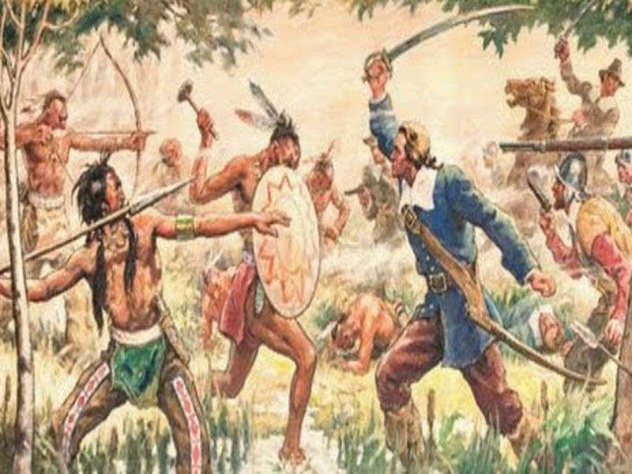
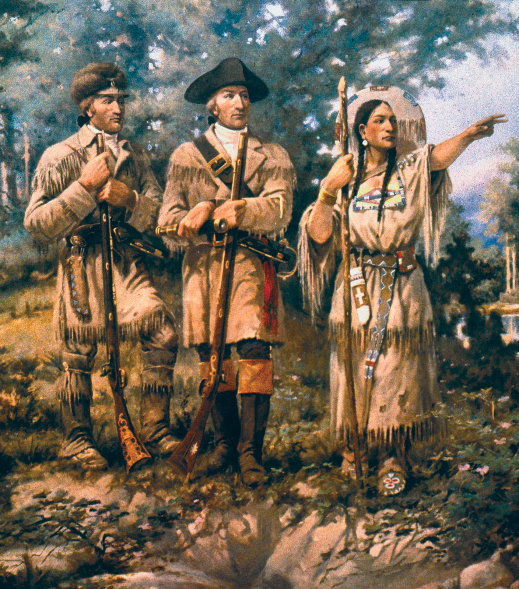
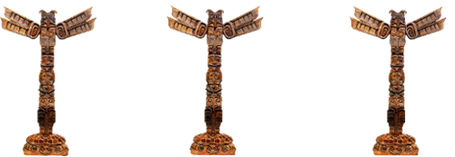
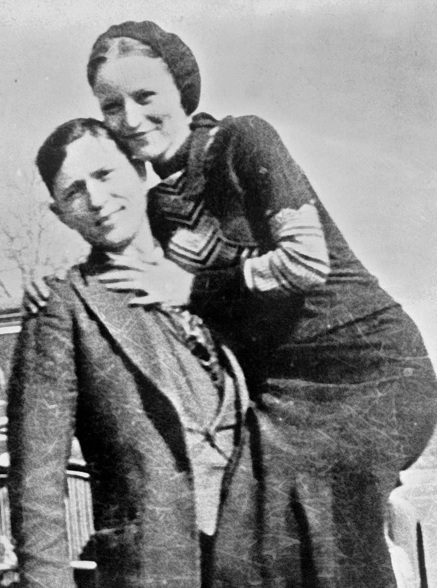
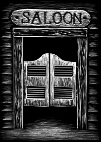
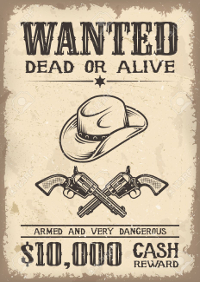
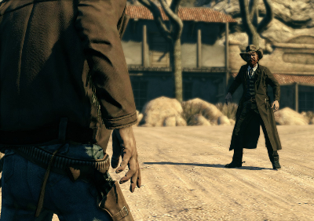

Vestul Sălbatic (sau The Wild West) este un termen ce desemnează zonele de frontieră americane in perioada 1600 – 1900. Acest termen este popular în regiunile vestice ale SUA.
In urma unor tratate, atât cu națiuni străine, cât și cu popoarele aborigene (triburile de americani nativi), precum și prin compromisuri politice, inovație tehnologică și cucerire militară, Statele Unite ale Americii s-au extins de la o coasta Atlantică la coasta Pacifică a Noului Continent conduși de așa-zisul ”Manifest Destiny”, forțat în mintea coloniștilor de către guvern, în urma actului Louisiana Purchase din 1803. În asigurarea și gestionarea Vestului, competențele guvernului federal american au crescut drastic, crescând de la o socializare agrară la o națiune industrializată și bine pusă la punct. De la prima promovare de stabilire și exploatare a ținutului, de la sfârșitul secolului al XIX-lea, guvernul federal a devenit un reprezentat sindical al spațiilor deschise rămase. Astfel, vechiul Vest al Americii a trecut în istorie, miturile vestului fiind ținute ferm în imaginația americanului și a străinilor deopotrivă.
O NOUĂ NAȚIUNE
• Primele mișcari semnificative la vest de Munții Apalași au pornit din Pennsylvania, Carolina din Sud și din Virginia, imediat după încetarea Războiului de Independență.
• Pionierii au început deplasarea spre vest în grupări numeroase, adăpostindu-se în mici cabane din lemn și vânând prada specifică zonei, printre care se numere cerbi și curcani.
• Pionierul tipic: îmbrăcat în tipica haină albă, pantaloni din piele și mocasini, acesta era o apariție nemaivăzută americanilor nativi. În scurt timp, pionierii au format mici poieni în zonele de pădure, unde cultivau porumb, grâu, tutun și chiar și fructe.
ANEXAREA TERENURILOR INDIENE — COMERȚUL DE BLĂNURI
• Anexarea terenurilor indiene: Războiul din 1812 dintre coloniștii americani și indienii nativi a fost ultima confruntare dintre cele două tabere. De partea indienilor se aflau și trupele britanice, care vizau crearea unui stat independent indian in Occidentul Mijlociu al Americii de Nord, insă sub tutela imperiului.
• Comerțul de blănuri:
Odată cu mutarea frontierei în Vest, vânătorii și pândașii le-au luat-o înainte, căutând în avans baraje și galerii pline cu jderi, castori, nurca și nevăstuici, ale căror blană era exportată în Europa. Această breaslă a blănarilor au fost primii europeni atât de adânc așezați în Bătrânul Vest.
THE LOUISIANA PURCHASE OF 1803 — CUMPĂRAREA LOUISIANEI DIN 1803:
• Thomas Jefferson credea că el este un om al frontierelor extinse, și a fost un influent militant pentru colonizarea Vestului. Cumpărarea Louisianei de către Jefferson a dublat suprafața țării sale pentru prețul de 15 milioane de dolari, plătind 4 cenți pentru un acru din noul teritoriu (245 milioane de dolari în banii actuali, deci 39 de cenți pe acru).
• Jefferson a întâmpinat opoziția federaliștilor, însă cei 15 milioane de dolari au fost deja oferiți Franței în schimbul suveranității Louisianei. Susținătorii lui Jefferson au aclamat această mișcare, văzând în aceasta miile de ferme ce aveau să se deschidă și să aducă America pe primele locuri în economia mondială, astfel formând baza pentru Democrația Jeffersoniană.
MANIFEST DESTINY
Ideologia ”Manifest Destiny” este credința că americanii și Statele Unite au fost predestinate spre a se extinde de la coasta Atlanticului la coasta Pacificului. Această ideologia exista încă de pe vremea coloniștilor, însă în 1840 a fost publicată într-o gazetă care declara următoarea secvență: ”împlinirea destinului nostru manifest... să ne împrăștiem pe continentul alocat nouă de către Providență pentru libera dezvoltare și pentru milioanele noastre ce se înmulțesc an de an” (n.tr.)

Pionierii frontierei


Cea mai importantă mișcare de explorare a Vestului Sălbatic a fost cea a lui Meriwether Lewis și al lui William Clark, care au fost primii delegați cu scopuri de explorare al Armatei Statelor Unite, in 1804, epediția luând final in 1806. Ei au fost ajutați, pe parcursul expediției, de fiica unui șef de trib Creek, Sacagawea, personaj imortalizat în numeroase monede americane. De asemenea, Toussaint Charbonneau i-a mai ajutat în explorarea și orientarea pe proaspăt achiziționatul teritoriu al Louisianei.
Astfel, prin expediția Lewis-Clark, interesele Statelor Unite față de Coasta Pacifică au crescut, în special dorința de a exploata resursele neatinse din acea zonă.
!
Nicio mișcare de colonizare nu a avut atât de mult impact asupra continentului american precum expediția lui Lewis și Clark a avut.Spre deosebire de alți exploratori, ei au luat notițe despre triburile băștinașe din acele zone, despre resursele ce puteau fi exploatate și despre șansele ca o colonie, ulterior mai multe și, eventual, state noi, să se dezvolte acolo.
Vestul cel sângeros
Butch Cassidy
Robert Leroy Parker, cunoscut și sub numele de Butch Cassidy a fost un hoț de trenuri și bănci notoriu în Vestul Sălbatic. Născut în 1866, în teritoriul Utah, a fost conducătorul grupării ”Wild Bunch”. Datorită presiunilor și căutărilor fără pauză organizate de Pinkerton Detective Agency, Cassidy a fost forțat să părăsească teeritoriul, împreună cu complicele său, The Sundance Kid și nevasta acestuia. În anul 1908, după ce au fugit în Argentina, ulterior Bolivia, au fost prinși într-un schimb de focuri, unde Kid și Cassidy au fost uciși.
Sundance Kid
Harry Alonzo Longabaugh, cunoscut sub aliasul The Sundance Kid, a fost un nelegiuit al Vestului Sălbatic, membru al ”Wild Bunch” și acolit foarte apropiat lui Butch Cassidy. Se presupune că cei doi infractori s-au întâlnit după eliberarea lui Butch din închisoare, în 1896. Longabaugh s-a născut în 1867, în Mont Claire, Pennsylvania, iar pe parcursul vieții a călătorit până în Utah, Kansas și Oklahoma, toate aceste state fiind, pe rând, prădate de către ”Wild Bunch”. A murit în 1908 alături de nevasta sa și de Butch Cassidy, în Bolivia. Moarte duetului criminal a fost supradramatizat în o multitudine de filme western.
Billy the Kid
Probabil cel mai cunoscut nume, pentru publicul larg, din întreg Vestul, Billy The Kid a fost unul dintre cei mai ”alunecoși” hoți de vite, pușcași și gambleri din întregul Vest Sălbatic. Născut la 1859, la 3 ani a rămas orfan de tată, iar familia a fost obligată de autorități să-și schimbe reședința din Kansas în Santa Fe, New Mexico în 1865, apoi la Silver City in 1868. La 12 ani a ucis primul om, în urma unei insultee la adresa mamei, apoi la 16 a jefuit un local de jocuri de noroc, împatimit de viciul blackjack-ului, Billy The Kid a fost cel mai tânăr evadat dintr-o închisoare din Vestul american. În urma evadării, a migrat singur în Arizona, unde a devenit hoț de vite. După ce a fost proscris din toate teritoriile, s-a întors la furtul de vite, iar 24 decembrie 1880 a fost prins la Fort Sumner de către ajutorul de șerif J.W.Bell. Billy urma să fie spânzurat la 13 mai 1881, însă acesta a evadat. Șeriful Par Garrett e cel ce l-a împușcat mortal pe Billy The Kid, povestea acestuia încheindu-se în 14 iulie 1881.

Bonnie and Clyde
Niciun cuplu nu rezonează mai bine cu Vestul Sălbatic decât cel format din Bonnie Elizabeth Parker și Clyde Chestnut Barrow, cunoscut, mai simplu, ca Bonnie & Clyde. Duetul a fost unul atât amoros, cât și infracțional, ei jefuind și ucigând în perioada Marii Crize Economice din SUA. Cei doi au captat atenția presei americane și au fost declaratți inamici publici și vânați în perioada 1931-1934. Renumele de hoți de bănci era oarecum și exagerat, Clyde preferând să fure magazine mici și benzinării. Amândoi au fost prinși și executați de către forțele de ordine americane în 23 mai 1934.
PERSONALITĂȚI ALE FRONTIEREI AMERICANE
Thomes Jefferson a fost cel de-al treilea președinte al Statelor Unite ale Americii, în perioada 1801 - 1809 și a fost unul dintre autorii principali ai Declarației de Independență. A fost un militant democrat, republican și un aprig susținător al mișcării coloniștilor americani de sub teritoriul deja cunoscut și domnit de către britanici. El a fost cel ce a aprobat celebra mișcare politico-socială numită THe Louisiana Purchase, acțiune ce a dublat teritoriul SUA din acele timpuri.
Thomas Jefferson
Jumătate om, jumătate mit, William ”Buffalo Bill” Cody a fost și este este întruparea spiritului Vestului pentru sute de mii de oameni, viața lui devenind o legendă a vieții de frontieră ce rezistă și în ziua de astăzi.
Născut în 1846, a crescut în preeriile din Iowa. Când tatăl său a murit în 1857, s-a mutat în Kansas cu familia, unde a lucrat ca meșter pe vagoane de marfă până în 1859, când s-a dus la Pikes Peak în Goana după Aur a acelei perioade, fiind prospector.
A luptat în Războiul Civil de partea unioniștilor, fiind cercetaș, iar apoi soldat în Cavaleria No. 7 Kansas. După război, a continuat să lucreze ca și producător de armament în atelierul său din Fort Ellsworth, Kansas.
Numele și l-a câștigat când, în 1867, a început să vâneze bivoli pentru a hrăni echipele de construcție de la Kansas Pacific Railroad. Se spune că, în 17 luni, a ucis 4280 de bivoli.
La începutul anului 1868, s-a întors în
armată, fiind liderul Cavaleriei Kansas No.5, luând parte la 16 bătălii, printre care și înfrângerea tribului Cheyenne de la Summit Springs. În 1872, i-a fost oferită Medalia de Onoare a Congresului, premiu ce i-a fost retras în 1916 pe motiv că nu a frecventat armata în anumite perioade. Medalia i-a fost înapoiată postum în 1989.
Buffalo Bill
Pe numele real Goyaałé, Geronimo a fost un lider din triburile apache Chiricahua. S-a remarcat în mod special în luptele împotriva mexicului și împotriva SUA și a luptat să apere zonele locuite de apași.
Deși a înțeles că nu mai poate recupera pământurile furate de către coloniști, Geronimo și-a continuat lupta pentru tot restul vieții. Masacrul de la Casa Grande a rămas în istorie prin fapta perfidă a mexicanilor de a încheia un armistițiu cu apsșii, dandu-le rachiu și agave, iar apoi omorându-i.
Geronimo s-a refugiat într-o peșteră, de unde conducea atacuri de gherilă de unul singur, distrugând întregi caravane sau imobilizând armate întregi. S-a predat de-abia în 1886, și a fost tratat ca un prizonier de război, iar nu ca un infractor. În februarie 2010, Camera Reprezentanților SUA a adoptat o rezoluție care recunoștea meritele liderului nativ american, un adevărat strateg al războiului de gherilă, și ca acesta să fie comemorat la 100 de ani de la moartea sa.
Geronimo
Duel al cunostintelor

1
BINE AI VENIT ÎN SALON! Aici ai de-a face cu oameni din toate colțurile noii lumi, de la New Mexico la Carolina de Sud, văcari, proscriși și bețivani. Parcurge acest site și descoperă farmecul Vestului Sălbatic! Ai grijă doar să nu îl calci pe nervi pe șerif!

2
Intră în pielea pionierilor care au descoperit noua frontieră americană, sau a bandiților ce i-au făcut numele cunoscut! Alegerea îți aparține!

3
Odată intrat în salon, trebuie să te confrunți cu acest quiz de 10 întrebări. Acest oraș nu este destul de încăpător pentru amândoi, așa că pregătește-ți cel mai bun cal și fii ager la minte!
JOC : GOANA DUPĂ AUR
Controls: W - sus, S - jos, A - stânga, D - dreapta


Thomas Jefferson